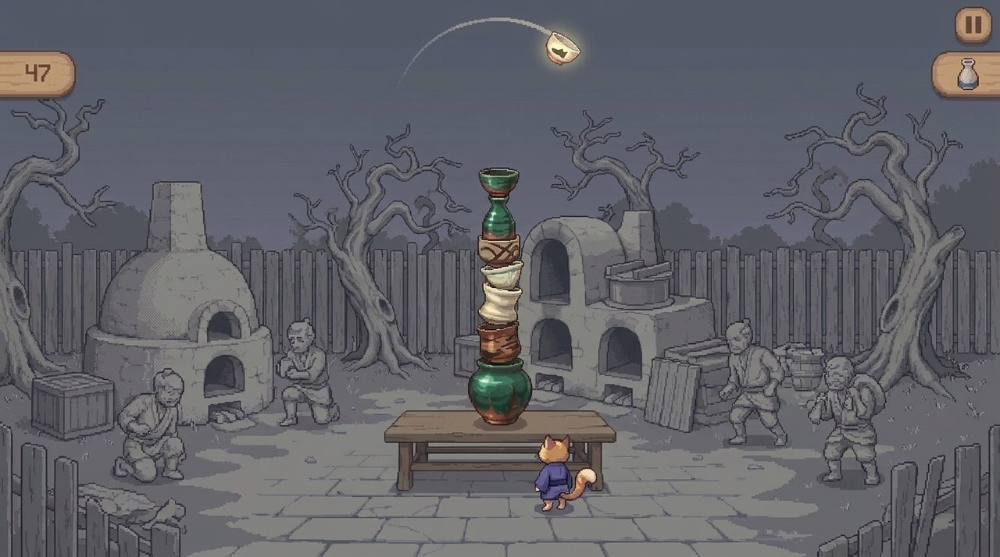

ステラは狼である。
タクティクス / PC · 開発中
このゲームを見る →AI三つとも開発中です。AI にどう頼み、何を自分の手でやっているかを、YouTube で記録しています。
タクティクス / PC · 開発中
このゲームを見る →
YouTube Playables · 開発中
このゲームを見る →
音楽を組む盤 · 開発中
このゲームを見る →制作記録は YouTube で、火・金・日に出しています。
YouTube で制作記録を見るHaus Tacorari
ゲームを作るスタジオ